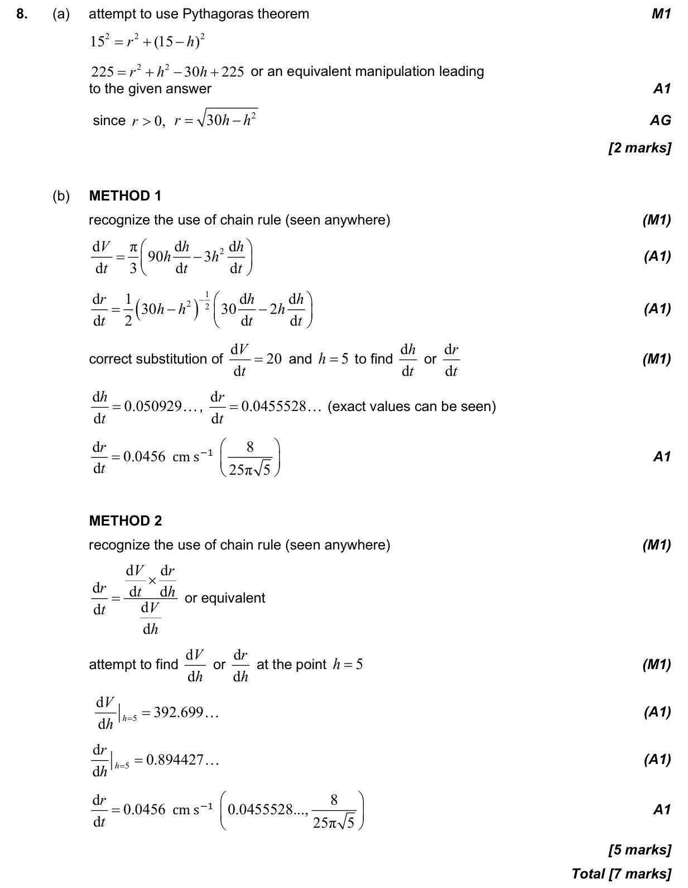

7 marks P2 TZ3 Section A Calculator 5.14 Implicit differentiation, related rates of change and optimisation5.6 Differentiating polynomials n in Q, chain, product and quotient rules3.2 2D and 3D trigonometry, sine rule, cosine rule and area Question Hide breakdown ab Markscheme 